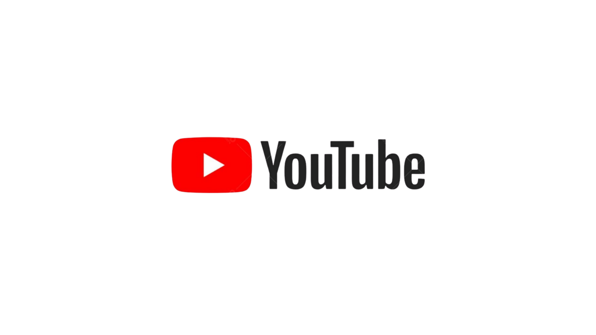

Meus Projetos
Aqui apresento meus projetos desenvolvidos no Projeto Integrador, disciplina presente na grade curricular da UNIVESP,
do quarto até o nono semestre dos cursos do Eixo de Computação, cujo objetivo é orientar um grupo de oito alunos a desenvolver
projetos junto à comunidade externa. Destaco minha contribuição para o grupo e disponibilizo os vídeos de apresentação de cada projeto.
Portal da Zeladoria - Análise de Dados e CI
Período: Fevereiro 2025 - Junho 2025
Desenvolvimento de solução web com foco em coleta, modelagem e visualização de dados para apoio à gestão pública.
Implementação de CI/CD com GitHub Actions e criação de dashboards com Power BI.
Tecnologias: Python, Flask, MySQL, GitHub Actions, HTML/CSS/JS
Destaques:
- Elaboração do relatório técnicoe levantamento bibliográfico;
- SCRUM master;
- Implementação de Integração Contínua;
- Criação de base de dados para Power BI;
- Configuração de pipeline de desenvolvimento;
- Comunicação com stakeholders.

Assista: Portal da Zeladoria
Conecta São Vicente - Portal da Zeladoria
Período: Julho 2024 - Novembro 2024
Protótipo de um software web para o setor de agendamento de serviços de zeladoria urbana da Prefeitura de São Vicente.
Responsável pela construção dos dashboards e comunicação com a comunidade utilizando SCRUM.
Tecnologias: Python, Flask, Google Sheets, HTML/CSS/JS
Destaques:
- Elaboração do relatório técnico e levantamento bibliográfico;
- SCRUM master;
- Criação de base de dados no Google Sheets;
- Interface de gráficos com JS Charts;
- Comunicação com stakeholders.
São Vicente Conecta
Sistema ERP para Pequenos Produtores Rurais
Período: Fevereiro - Maio 2024
Desenvolvimento do front-end e auxílio na construção do banco de dados.
Contribuição com documentação, pesquisa e mediação entre equipe e comunidade.
Tecnologias: HTML, CSS, JS, SQLite, GitHub
Destaques:
- Desenvolvimento da interface e CRUD's;
- Gestão do banco de dados;
- Documentação do código;
- Elaboração do relatéorio técnico e levantamento bibliográfico;
- Liderança na comunicação com stakeholders.
ERP para Coletivo Morro das Panelas